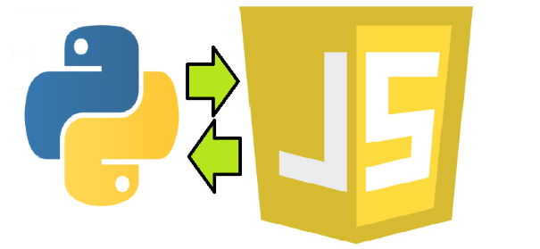

Aktuel: ProjectFunder
Das Projekt wird mit JavaScript und Flask gemacht. Im Rahmen dieser Arbeit sollte ich ein Web-Appliaktion erstellen. auf die ein User ein Projekt erstellen kann. So können die anderen User das Projekt ducrh Spende unterstützen.+Login function
+Alle Projekte darstellen (aktuell und auch alte Projekte)
+Unter bestimmten Bedingungen könnte ich diese Actionen durchgeüführt werden (mehr dazu komme ich später ):
-Projekt erstellen
-Projekt löschen
-Projekt editieren
Andere Funktionen werden im Laufe hinzugefügt werden.
Front-end : JavaScript
Backend : Flask
Ich nutze für die Datenspeicherung eine MySQL-Datenbank. Flask für die Verbindung zwischen Front-end und Backend ( REST-Schnittstelle )